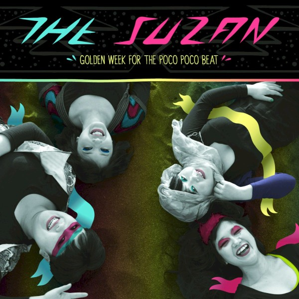
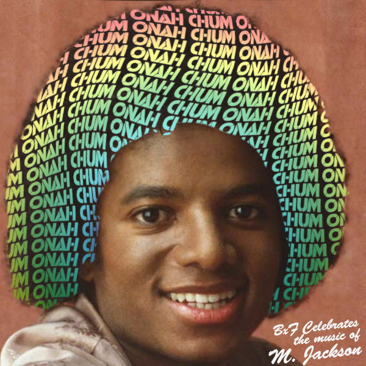
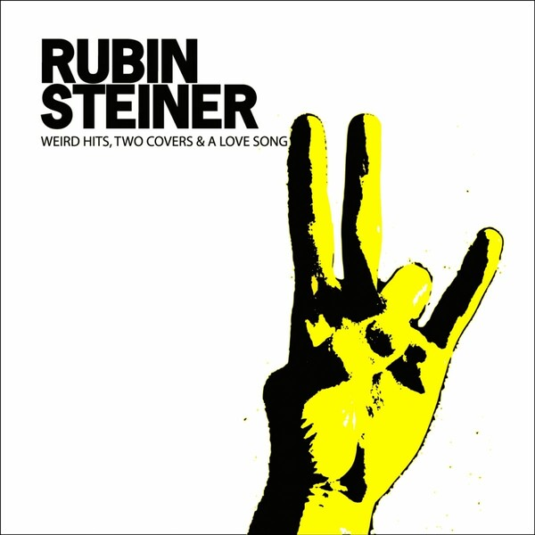
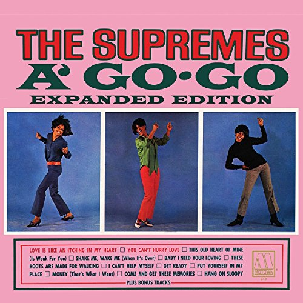
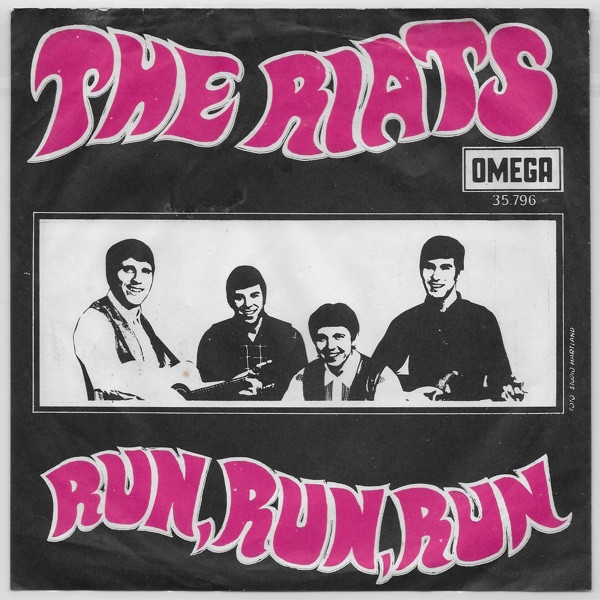
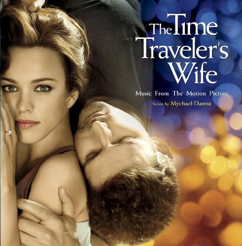
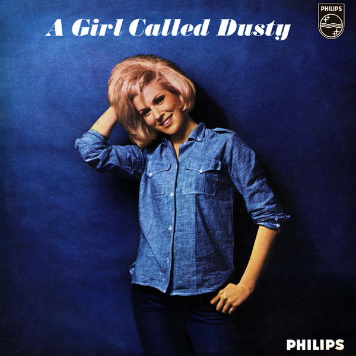
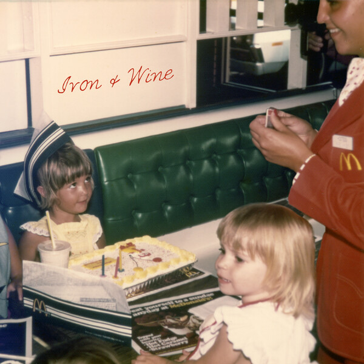
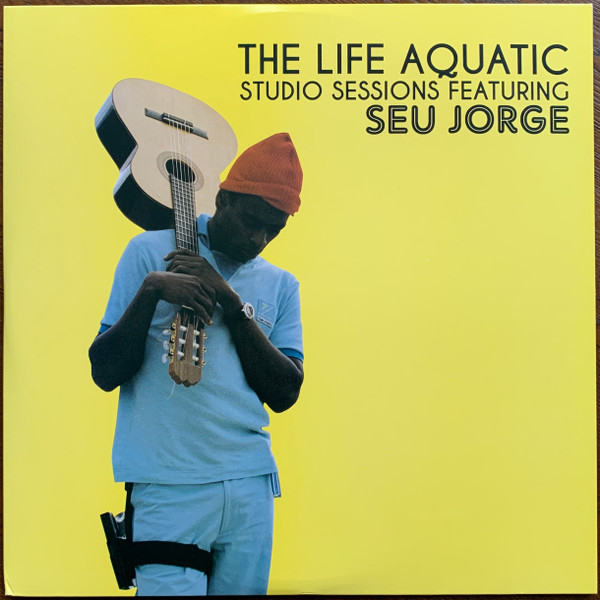

01Animal
The Suzan – Golden Week For The Poco Poco Beat (2010)
orig. Miike Snow
 02
02
Young Folks
Hideki Kaji//The Suzan – Young Folks (2015)
orig. Peter Bjorn and John

03Human Nature
Toro Y Moi – Chum Onah: BUTTERxFACE celebrates the music of M. Jackson (2009)
orig. Michael Jackson
 04
04
(I Can't Get No) Satisfaction
Devo – Q: Are We Not Men? A: We Are Devo! (1988)
orig. The Rolling Stones
 05
05
Miss You
The Dynamics – Version Excursions (2007)
orig. The Rolling Stones
 06
06
Please, Please, Please, Let Me Get What I Want
William Fitzsimmons – Please Please Please: A Tribute To The Smiths (2017)
orig. The Smiths

07Warm Leatherette
Rubin Steiner – Weird hits, two covers & a love song (2008)
orig. The Normal
 08
08
Slippery People
Mavis Staples/Win Butler/Regine Chassagne – Slippery People (Live) (2017)
orig. Talking Heads
 09
09
(I Can't Get No) Satisfaction
Bubblerock – Aquarium Drunkard Presents: Maison Dufrene II (2014)
orig. The Rolling Stones

10(I Can't Get No) Satisfaction (Alternate Vocal)
The Supremes – A' Go-Go: Expanded Edition (2017)
orig. The Rolling Stones
 11
11
She's Lost Control
Girls Against Boys – She's Lost Control / Love Will Tear Us Apart (1995)
orig. Joy Division
 12
12
Crying
The Morning Benders – The Bedroom Covers (2007)
orig. Roy Orbison
 13
13
Isolation
The Smashing Pumpkins – Mellon Collie And The Infinite Sadness (2012)
orig. Joy Division

14Run Run Run
The Riats – Run, Run, Run (1967)
orig. Velvet Underground

15Love Will Tear Us Apart
Broken Social Scene – The Time Traveler's Wife Original Movie Sountrack (2009)
orig. Joy Division
 16
16
Linger
The Mathletes – The Mathletes Present The Mathletes (2023)
orig. The Cranberries

17Twenty-Four Hours From Tulsa
Dusty Springfield – A Girl Called Dusty (1964)
orig. Gene Pitney
 18
18
Suzanne
Flo Morrissey – Gentlewoman, Ruby Man (2017)
orig. Leonard Cohen
 19
19
Das Model
The Cardigans – For What It's Worth (2008)
orig. Kraftwerk

20Time After Time
Iron & Wine – Time After Time (2016)
orig. Cyndi Lauper

21Starman
Seu Jorge – The Life Aquatic Studio Sessions (2005)
orig. David Bowie
 22
22
Cloudbusting
Swimmer One – Outliers (2023)
orig. Kate Bush
 23
23
Ever Fallen in Love
Katy Goodman/Greta Morgan – Take It, It's Yours (2016)
orig. The Buzzcocks